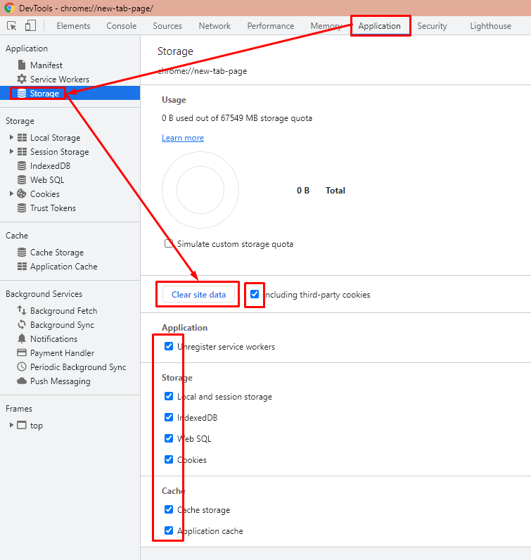
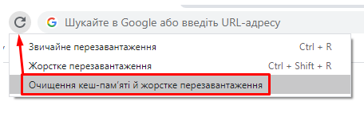

НАВІЩО ОЧИЩАТИ КЕШ І ФАЙЛИ COOKIE?
Очищення кешу та файлів cookie з веб-браузера-важливий перший крок практично для будь-якого усунення несправностей під час перегляду Інтернету. "Кеш" - це інструмент, який використовується вашим веб -браузером для прискорення процесу завантаження сторінки. Однак іноді це може викликати проблеми, коли веб -сайти оновлюються та розробляються, оскільки файли, збережені у кеші, можуть конфліктувати з тим, що насправді кодується на веб -сайті. Очищення кешу та файлів cookie - це спосіб, яким ми можемо бути впевнені, що будь -які проблеми, з якими ви можете зіткнутися, можуть бути усунені.
КОМБІНАЦІЯ КЛАВІШ ДЛЯ БІЛЬШОСТІ БРАУЗЕРІВ
Якщо ви використовуєте Internet Explorer, Edge, Google Chrome або Mozilla Firefox, ви можете швидко очистити кеш за допомогою комбінації клавіш.
Відкривши браузер слід одночасно натиснути Ctrl + Shift + Delete на клавіатурі, щоб відкрити відповідне вікно. Опісля обираєте період і
ВАЖЛИВО: Обов’язково закрийте/закрийте браузер та перезапустіть його після очищення кешу та файлів cookie.
Якщо не допомогло... Буває, що закешовані дані продовжують використовуватися незважаючи на те, що їх почистили. В такому разі на допомогу приходить наступний лайфхак:
- Відкрийте браузер Chrome (оскільки він найпопулярніший на момент написання цієї статті)
- Натисніть F12
- Перейдіть Application -> Clear storage -> Clear site data
- 
- Не закриваючи DevTools натиснути на значок перезавантаження сторінки (і не відпускати)
- 